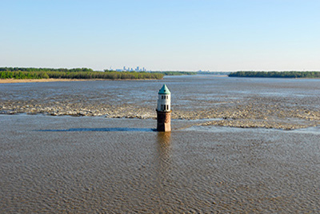

This low-water, immovable rock dam spanning the main channel of the Mississippi River sits just south of the Old Chain of Rocks Bridge (now Chain of Rocks Road), and can be discerned primarily as a slight ripple on the river’s gray surface. Known alternately as Dam No. 27 or Chain of Rocks Dam, it is often confused with the “chain of rocks” geological feature itself—which is in fact a submerged anticline of local limestone that prevented the navigation of this stretch of the river during low-water events. Dam No. 27 sits five miles upriver and across Chouteau Island from its associated lock on the Chain of Rocks Canal, a canal dug to bypass said limestone anticline. This 2,000-foot-long dam raises the water level upstream by three feet, having its greatest impact not on its associated Lock No. 27 but rather on the elevation of the river at the base of Lock No. 26 in Alton, Illinois.